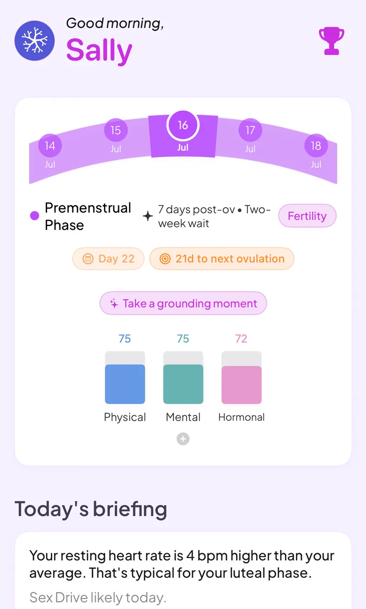

Fertility tracking that reads your wearable, so no morning thermometer
If you are trying to conceive, Veya pulls temperature and sleep from your wearable in the background, so you can skip the thermometer alarm. You can still log LH tests and cervical mucus, and Veya shows your fertile window as a range next to all of it.
Download VeyaNot on iPhone? Try it in the browser on any device.

On a computer?
Scan to download on your phone.

Built for trying to conceive
Temperature from your wearable
Temperature and sleep come in automatically. On iPhone, Apple Watch, Oura, WHOOP and Garmin data arrives through Apple Health. In the web app, Oura and Withings connect directly. Veya draws it as a basal body temperature chart over your cycle.
Fertile window as a range
Veya shows a predicted fertile window with a start and end date instead of a single guess, and it updates as you log.
LH tests and cervical mucus
Log ovulation test results and cervical mucus each day, and see them next to your temperature and your predicted window.
Lab tracking
Log labs like TSH, AMH and progesterone over time, so results sit on the same timeline as your cycle.
Sleep, stress and mood
See how sleep, mood and symptoms move across your cycle, with patterns surfaced from your own logs.
History that carries forward
If you move on to IVF or pregnancy, your cycle history comes with you instead of starting over.
This is not birth control
Veya helps you see your fertility signals. It is not a contraceptive and it does not tell you when it is safe to skip protection. Try our ovulation calculator for a quick estimate, or read about how to tell if you're ovulating.
See how it all connects
Fertility signals don't move alone. Veya puts wearable temperature, sleep and heart rate variability next to your LH tests, cervical mucus, mood and symptoms, and looks for patterns across your cycles, like how a poor week of sleep lines up with a shifted temperature curve. Your fertile window is shown as a range that updates as the data comes in. The same record carries into IVF or pregnancy tracking if you get there.
What you can log
Private by default
Fertility tracking means logging sensitive details. Veya has no ads and does not sell your data, and you can export or delete what you have logged at any time.
Frequently asked questions
Still comparing apps? See our fertility app comparison.
Track your fertile window without the thermometer
Let your wearable do the temperature, and log the rest in a minute a day.
Download VeyaNot on iPhone? Try it in the browser on any device.
Tracking for other conditions
Pregnancy tracking · IVF tracking · PCOS tracking · Perimenopause tracking · Cycle syncing · All conditions